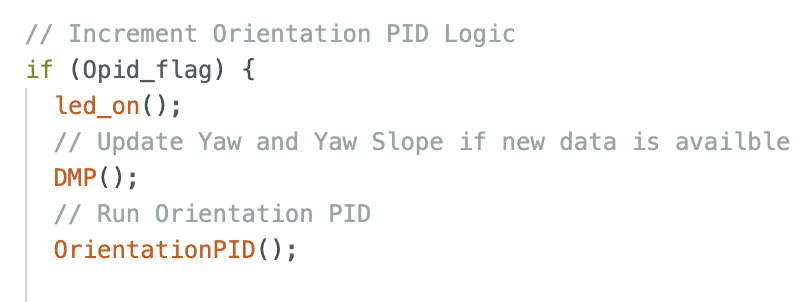
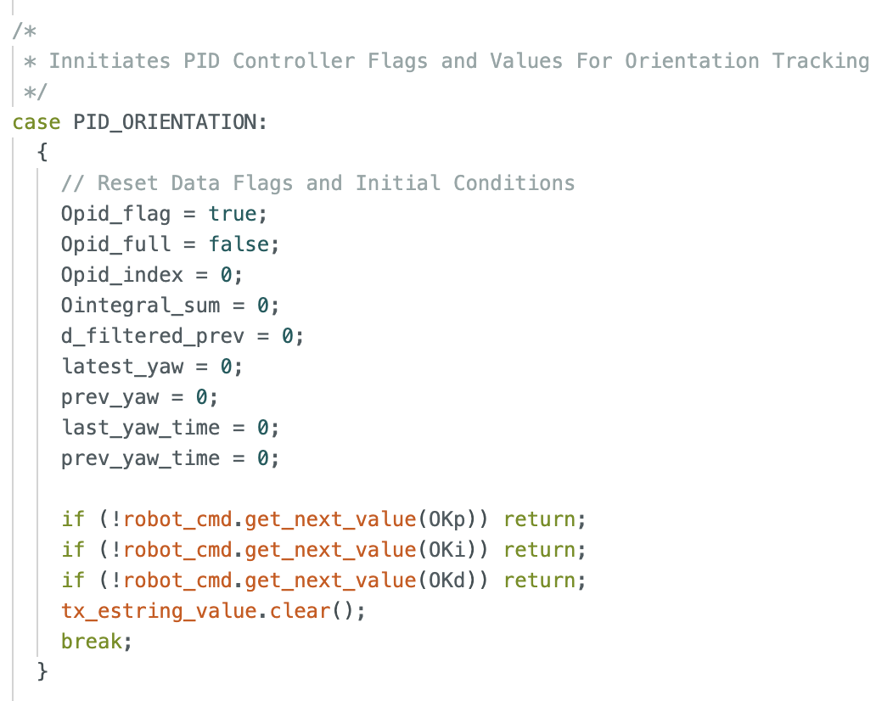
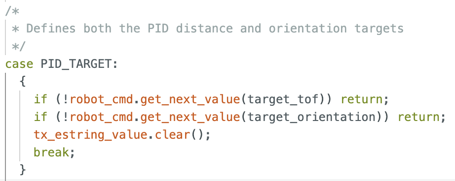
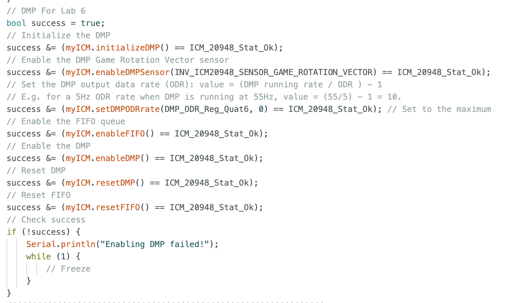
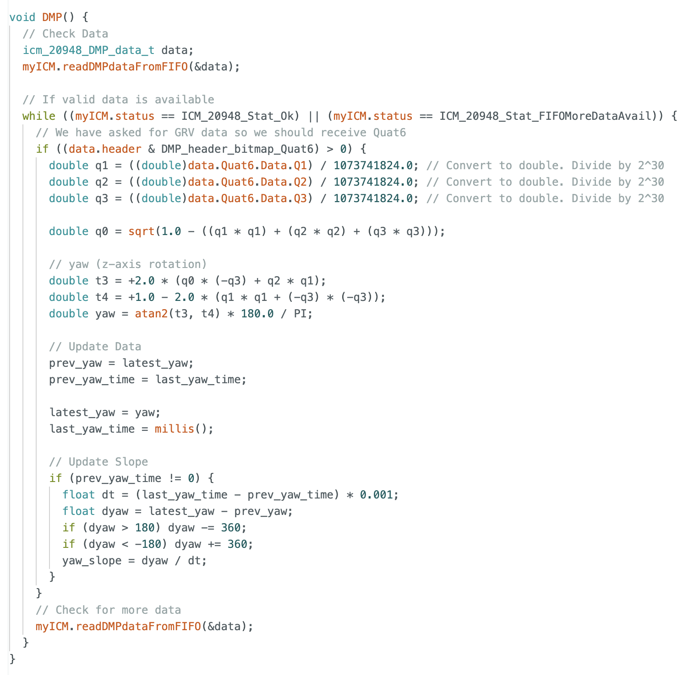
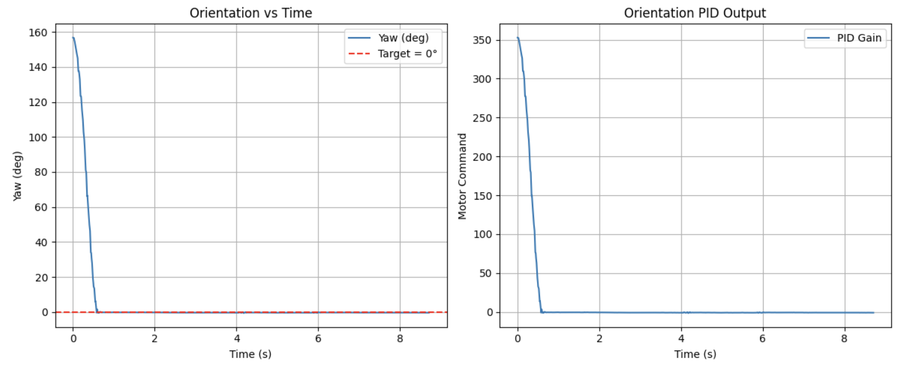
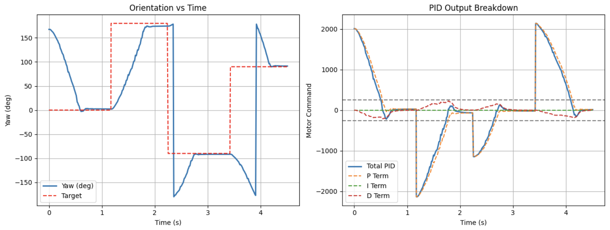
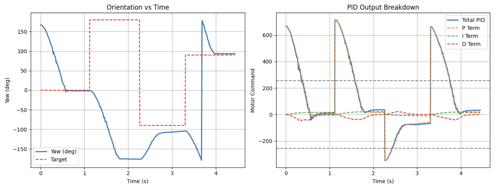
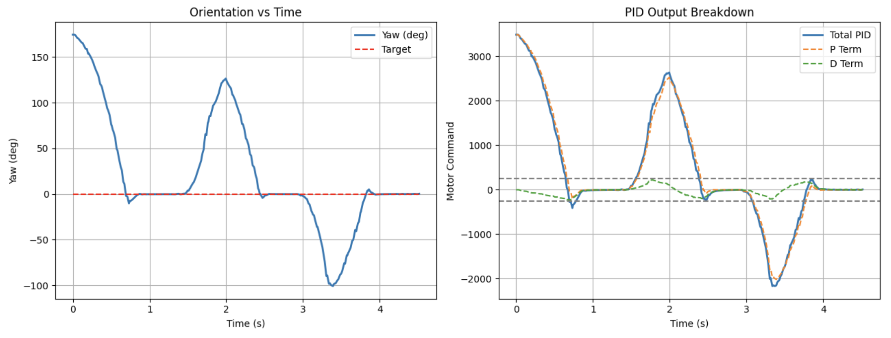

Lab 6 – Orientation Control
Connor Lynaugh
Overview
This lab’s objective was to extend the PID controller from linear distance control to rotational orientation control using the onboard IMU. Unlike distance control, orientation introduces challenges such as angular wraparound, sensor drift, and sensitivity to timing variability. The goal was to design a controller capable of rotating the robot to a desired yaw angle while maintaining stability.
System Architecture
The control system was implemented in a non-blocking structure within loop(). Each iteration checks control flags: if the orientation PID flag is set, the system updates yaw and yaw slope, then computes the control output. If a data transmission flag is set, logged data is sent over BLE including timing, orientation, and PID data. Otherwise, the loop continues handling Bluetooth communication. The notification handler is the same as before except orientation is collected as opposed to distance and error.


Two new bluetooth commands were added to respectively define the orientation PID gain values with initial conditions very similar to Lab 5. And also to set both the time of flight target and the orientation target simultaneously in real time.


This structure allows real-time tuning and dynamic setpoint updates, which will be important for future extensions such as waypoint-based navigation. This was used in lab to repeatedly change the target yaw.
Orientation Estimation
The gyroscope has a configurable full-scale range up to ±2000°/s. This is well above the rotational speeds observed in this lab, so saturation is not a concern. This parameter can be adjusted if higher sensitivity or range is needed. Yaw is obtained using the IMU’s Digital Motion Processor (DMP), which outputs a fused orientation estimate in quaternion form. Unlike direct gyroscope integration, which accumulates drift due to bias, the DMP internally combines gyroscope and accelerometer measurements to produce a stable orientation estimate. The gyroscope provides high-frequency rotational dynamics, while the accelerometer provides a gravity reference for long-term correction. This reduces drift and removes the need for external filtering.
The DMP is initialized in setup() by enabling the Game Rotation Vector (Quat6) output and configuring the FIFO.

Quaternion data is read from the DMP FIFO each loop using readDMPdataFromFIFO(&data). The FIFO is then continuously drained using a while loop as long as valid data is available, ensuring that only the most recent measurement is used and preventing stale data or storage overflow. When a packet containing Quat6 data is detected via data.header, the quaternion components are extracted and scaled to recover floating-point values. The quaternions are then converted to yaw using standard trigonometric relationships, producing an angle in degrees. Current yaw is stored in latest_yaw, while the previous value and timestamp are shifted accordingly. Angular velocity is then computed using a finite difference between consecutive yaw measurements divided by the elapsed time. Because yaw wraps at ±180°, the difference is corrected to remain within the shortest angular interval before computing the slope. The resulting yaw_slope provides a continuous estimate of angular velocity even when crossing the wrap boundary and is used directly in the derivative term of the controller.

Error Formulation and Wraparound
float error = target_orientation - estimated_yaw;
if (error > 180) error -= 360;
if (error < -180) error += 360;This resolved a wraparound bug where the robot would otherwise rotate nearly a full revolution.
PID Implementation
PID control is implemented in a near identical manner as in lab 5 with structural data flags and predefined data arrays. Extrapolation occurs each and every loop to provide the fastest result.
Proportional Control
The proportional term provides the primary control effort. I calculated an initial guess for Kp (1.42) given that I wanted maximum motor input (255) at the furthest displacement (180 degrees). I quickly increased this gain to 2.25 where it initially was achieving the target with little deadband. Note: Upon returning to this section to film, the proportional gain had changed to 3.25 for the same result.

Derivative Control
To evaluate performance under changing conditions, the target orientation was updated in real time to 0°, 180°, -90°, and 90°. These tests verified correct handling of large rotations, sign changes, and wraparound across ±180°. The implemented wraparound correction ensured the robot always took the shortest rotational path. The derivative term was implemented using the calculated yaw slope rather than the numerical derivative of error. Since yaw is effectively the integral of angular velocity, taking the derivative of yaw recovers angular velocity. This eliminated sharp increases of the derivative term coined as derivative kick which could contribute up to 160 towards the motor input on target orientation transitions. However, the derivative signal is by nature more sensitive to noise and timing variability, so a low-pass filter was applied using the following equation:
d_filtered = yaw_alpha * yaw_slope + (1 - yaw_alpha) * d_filtered_prev;By ranging alpha in increments of 0.05, an alpha value of 0.1 proved effective in eliminating high frequency noise for the surface of my desk as seen below.


Given the addition of damping provided by the derivative term I was able to aggressively raise the proportional gain. Starting with a derivative gain of 0.001, I eventually scaled up to kp = 12 and kd = 0.5 to both rapidly approach the target and to prevent any overshoot. Tuning was conducted to produce accurate settling with minimal overshoot.

Integral Control
In an attempt to lower the proportional gain and the derivative gain, integral control was added. Starting at 0.001 and slowly increasing it, produced conflicting results. This was especially true when attempting to configure the integral gain for changing orientation goals which can happen in real time. Of course the integral sum could be reset with each change but the expected settling time and needs were inconsistent given minimal results.

Thus, integral control was not included in the final design. The proportional term with damping was sufficient to overcome steady-state error.
Motor Control
mapped_pwm = map(pwm, 0, 255, 40, 200);This ensures motor commands exceed the threshold needed to overcome static friction while avoiding saturation. A calibration factor of 1.15 was applied to the right motors to correct asymmetry.

Sampling Rate and Timing Effects
Using the data logged from my notification handler I calculated that the system operates with an average loop time of about 9ms (110 Hz) with noticeable variability. This timing jitter directly affects the derivative term, introducing noise and small inconsistencies in damping behavior. As configured the DMP output data rate was initialized to its default value of 1100 Hz, meaning that we expect several values in the queue each time yaw is updated. Thus, draining the queue is an important task for my DMP function.
Disturbance Response
The controller was tested under external disturbances where I would rotate the car both dramatically and subtly. With the original gains of kp = 12 and kd = 0.5, there was consistent undershoot. In order to make the system more stable I increased the kp term to 20 where the robot now quickly returned to the target orientation after perturbations. For the most precise and accurate orientation tracking a higher kp term of 30 proved useful for disturbances and more. This comes at the expense of a brief overshoot of up to 5 degrees. Depending on what controls may be good for later labs this might be useful to take note of.

Conclusion
This lab demonstrated that orientation control requires careful handling of angular wraparound, sensor noise, and timing variability. By using the IMU’s DMP, implementing filtered derivative control, and tuning gains appropriately, a stable and responsive PD controller was achieved.
Acknowledgements
I would like to thank the teaching staff for persistent help and oversight. I would also like to credit ChatGPT for its graphing scripts as well as its conversion of my written lab report into a functional html page.